Лайфхаки фронтенд разработчика
Алексей Золотых, Wrike
Инструмент для совместной работы

1. Верстка
Когда я начинал верстать
Что нужно было верстать?
- Галерея
- Шапка
- Футер
- Header
- Форма обратной связи
Типовые решения
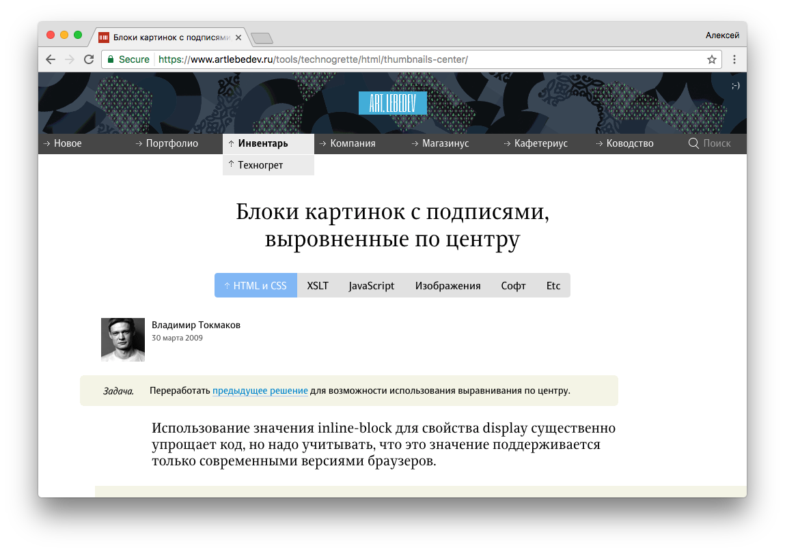Zen Coding (emmet)
div.header>a.logo TAB
Pixel perfect
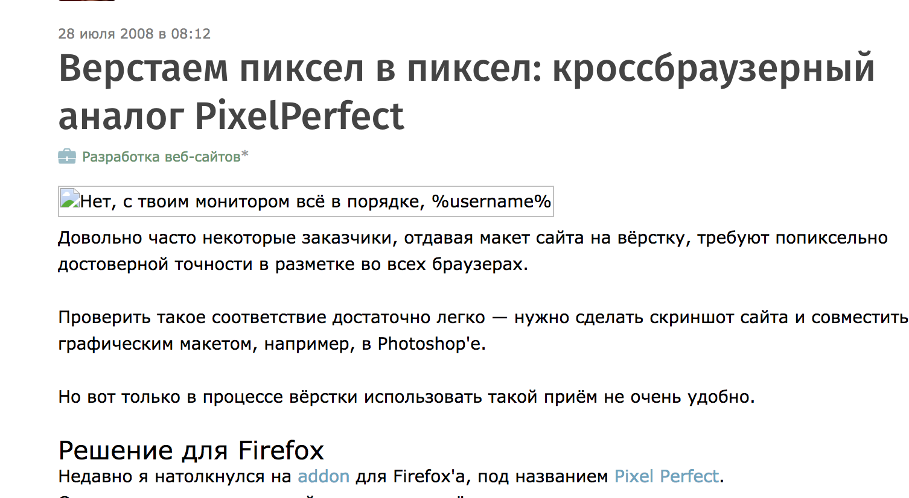Live Reload
Стили поменялись → Бразуер перезагрузился
Пришлось писать свой
- Сохраняет позицию и картинку после перезагрузки
- Горячие клавиши
- Горячие клавиши как в VIM (hjkl)
Autosave Dev Tools
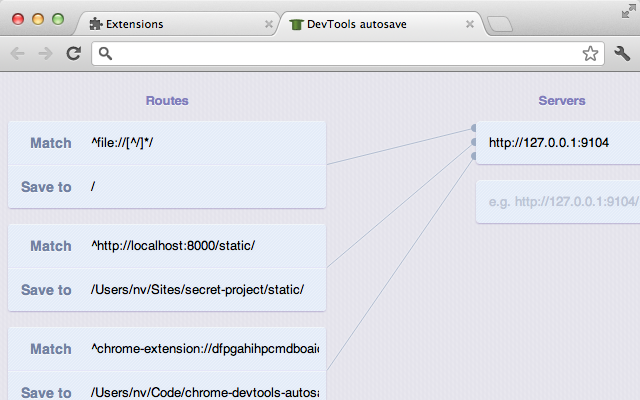Autosave Dev Tools
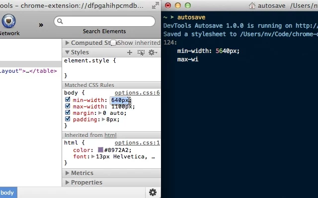Autosave Dev Tools + мой PixelPerfect
- Пишем HTML в BEM стиле
- Выдираем селекторы из HTML
extractcss.com
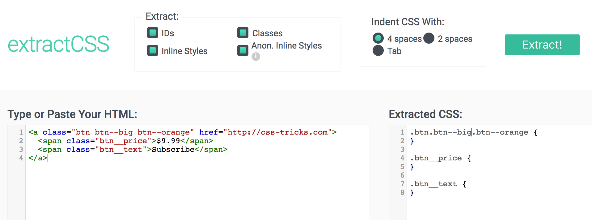Autosave Dev Tools + мой PixelPerfect
- Пишем HTML в BEM стиле
- Выдираем селекторы из HTML
- Запускаем Autosave
- Пишем стили из ChromeDevTools
- Подгоняем границы элементов, размеры шрифтов и прочее
- Profit!
* Работает только с CSS (не умеет source maps)
Webpack и BrowserSync умеют перезагружать стили без перезагрузки страницы
Workspaces из ChromeDevTools делают тоже самое и поддерживают source maps
Скорость верстки растет очень быстро
Если человек знает типовые решения, он все равно быстрее
2. Презентация проекта
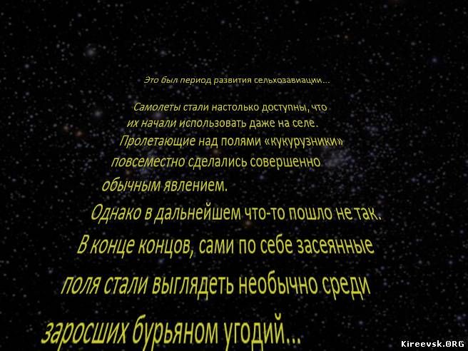Ситуация
- Фронтенд готов на половину
- Бекенд 🍻 🥂 🍷 🍾 🍹 ... короче он еще не готов 🤢
- Заказчик хочет посмотреть проект
- Сейчас 😇
- 👿 Вот прямо сейчас
- За что я вам плачу!? 🤦♂️
Github pages?
— Чтобы все увидели наш код!?
Хостинг?
Денег нет, но вы держитесь!
ngrok.com
$ ngrok http 8000Ваше приложение доступно из интернета
ngrok.com
стал стоить $5 в месяцА денег, как известно, нет!
localtunnel.me
Тоже самое, только бесплатно
python3 -m http.server 8001Запускает веб-сервер одной строкой с корнем в папке в которой запущен
Ruby 1.9.2+
ruby -run -ehttpd . -p8000Node
npm install -g http-server && http-server -p 8000PHP
php -S 127.0.0.1:8000Есть даже это😜
C:\> "C:\Program Files (x86)\IIS Express\iisexpress.exe" /path:C:\MyWeb /port:8000Еще много чего интересного: goo.gl/mPaagd
Ситуация 2
- Фронтенд готов на 80%
- Бекенд ... короче он еще не готов
Нужно быстро развернуть API
deployd.com
- Быстро поднимаем API без кода
Схема
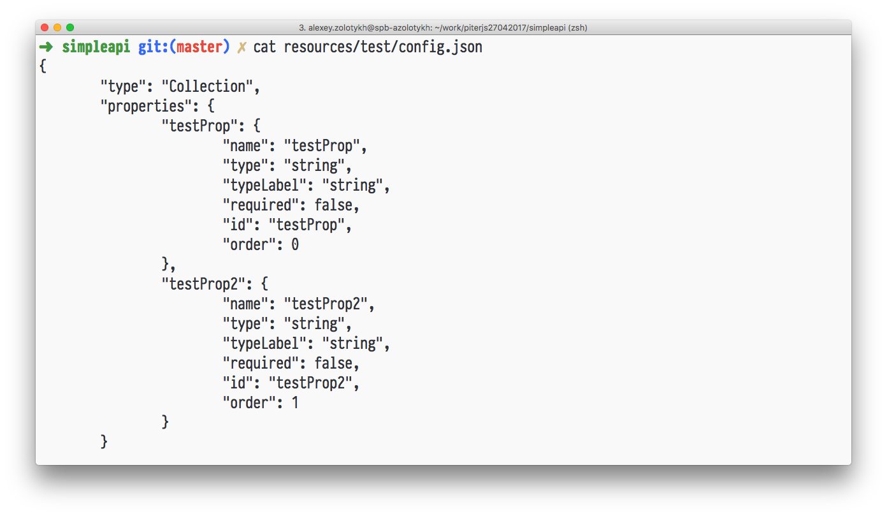GUI для изменения схемы
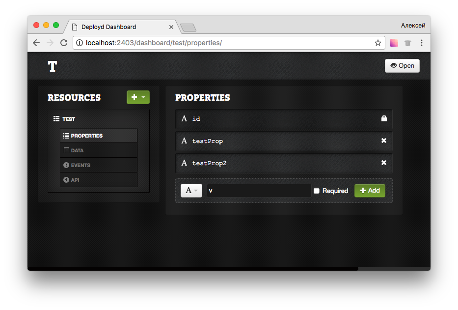GUI для добавления данных
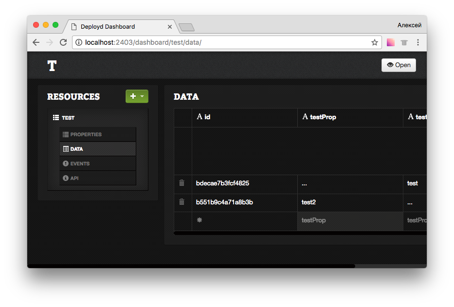curl localhost:2403/test | python -m json.tool3. Консоль
Поиск
Как вы находите что-то в вашем коде?
Поиск в IDE или в текстовом редакторе
Поиск слова «test» в проекте на 2 000 000
- WebStorm: 34сек
- Grep: ^C после 3 минут 💩
- Silver searcher: 7 сек 👍 💩
- Rip grep: < 1 сек 👍
- git grep: < 1 сек 👍
Четкий поиск
Нечеткий поиск
По заданному слову найти в тексте или словаре размера n все слова, совпадающие с этим словом (или начинающиеся с этого слова) с учетом k возможных различий
FZF
Зачем?
Философия UNIX гласит:
- Пишите программы, которые делают что-то одно и делают это хорошо.
- Пишите программы, которые бы работали вместе.
- Пишите программы, которые бы поддерживали текстовые потоки, поскольку это универсальный интерфейс».
И?
Умный kill
# fkill - kill process
fkill() {
local pid
pid=$(ps -ef | sed 1d | fzf -m | awk '{print $2}')
if [ "x$pid" != "x" ]
then
echo $pid | xargs kill -${1:-9}
fi
}
Умный переключатель веток в git
fbr() {
local branches branch
branches=$(git for-each-ref --count=30 --sort=-committerdate refs/heads/ --format="%(refname:short)") &&
branch=$(echo "$branches" |
fzf-tmux -d $(( 2 + $(wc -l <<< "$branches") )) +m) &&
git checkout $(echo "$branch" | sed "s/.* //" | sed "s#remotes/[^/]*/##")
}
Другие примеры
- Открыть файл в дефолтном редакторе
- Перейти в другую директорию
- Поиск по истории Chrome
- Напиши все, что захочешь!
Больше примеров
say 'ваш текст'
В OSX можно проговорить текст голосом
Будильник
$ say "Idi rabotat', mat' tvoyu'" | at 12:00Аудиокнига
$ say -f manual.txtМожно сохранить в файл
$ say -o filename -f manual.txtЛинуксойды! Не грустите!
echo "Text to speak"|espeakЖдать, когда пройдут все тесты дорого
pub run grinder test 155.96s user 38.64s system 226% cpu 1:25.82 total
Следим за файловой системой и запускаем один тест по изменению
После любого изменения в папке тест запустится снова
$ fswatch -o . | xargs -n1 -I{} \
> pub run test -x codegen \
> test/src/widget/widget.dart \
> -pcontent-shell --pub-serve=8085time ./build.sh.cmd./build.sh.cmd 580.17s user 78.61s system 134% cpu 8:11.57 total
Хорошо уведомить, когда сборка закончится
Десткопные уведомления из консоли
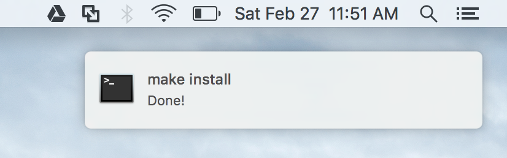$ noti ./build.shWindows
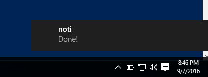Linux (Mint)
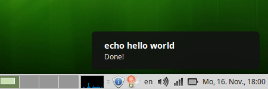4. Git
Git ignore
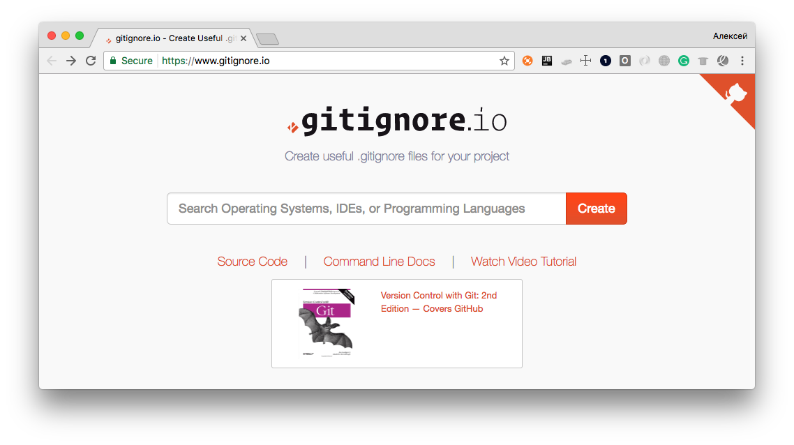Git ignore
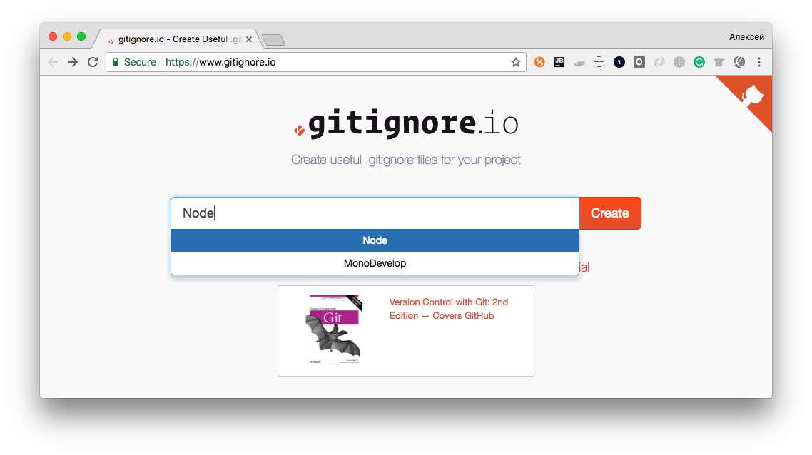Git ignore
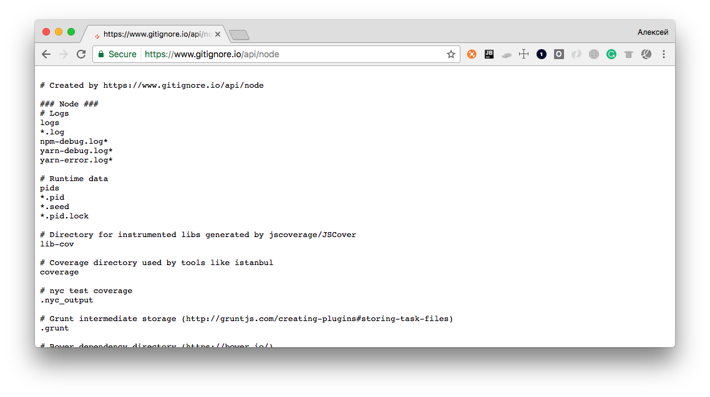Возможно открывать сайт и не нужно?
$ git config --global alias.ignore \
> '!gi() { curl -L -s https://www.gitignore.io/api/$@ ;}; gi'git-standup
github.com/kamranahmedse/git-standup
$ npm install -g git-standupgit-standup
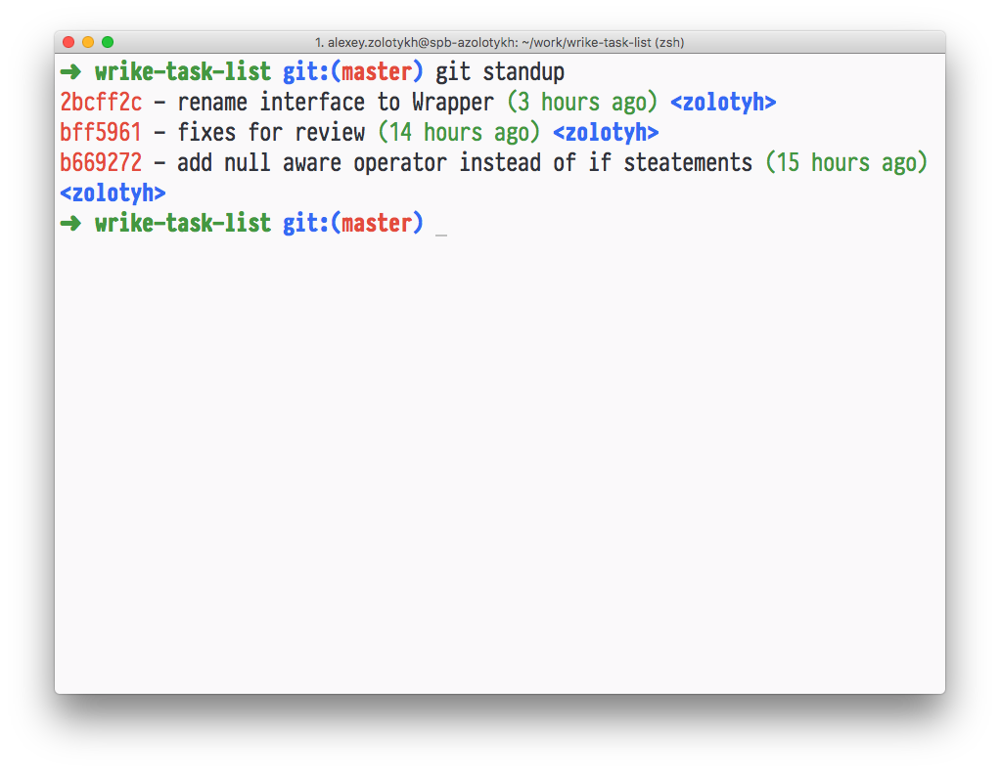Умеет работать с несколькими репозиториями
Используем мердж тул из продуктов JetBrains
файл: ~./.gitconfig
[merge]
tool = intellij
[mergetool "intellij"]
cmd = /Applications/IntelliJ\ IDEA.app/Contents/MacOS/idea merge $(cd $(dirname "$LOCAL") && pwd)/$(basename "$LOCAL") $(cd $(dirname "$REMOTE") && pwd)/$(basename "$REMOTE") $(cd $(dirname "$BASE") && pwd)/$(basename "$BASE") $(cd $(dirname "$MERGED") && pwd)/$(basename "$MERGED")
trustExitCode = true
[diff]
tool = intellij
[difftool "intellij"]
cmd = /Applications/IntelliJ\ IDEA.app/Contents/MacOS/idea diff $(cd $(dirname "$LOCAL") && pwd)/$(basename "$LOCAL") $(cd $(dirname "$REMOTE") && pwd)/$(basename "$REMOTE")
Конфликты?
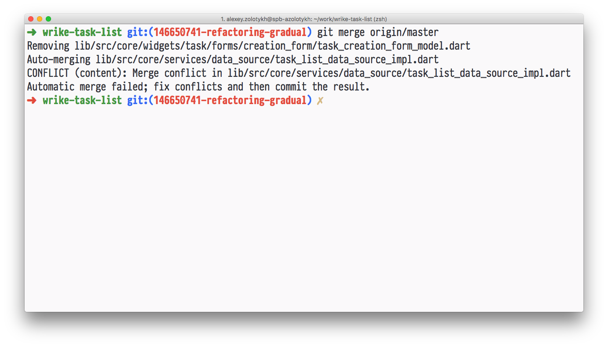Git mergetool
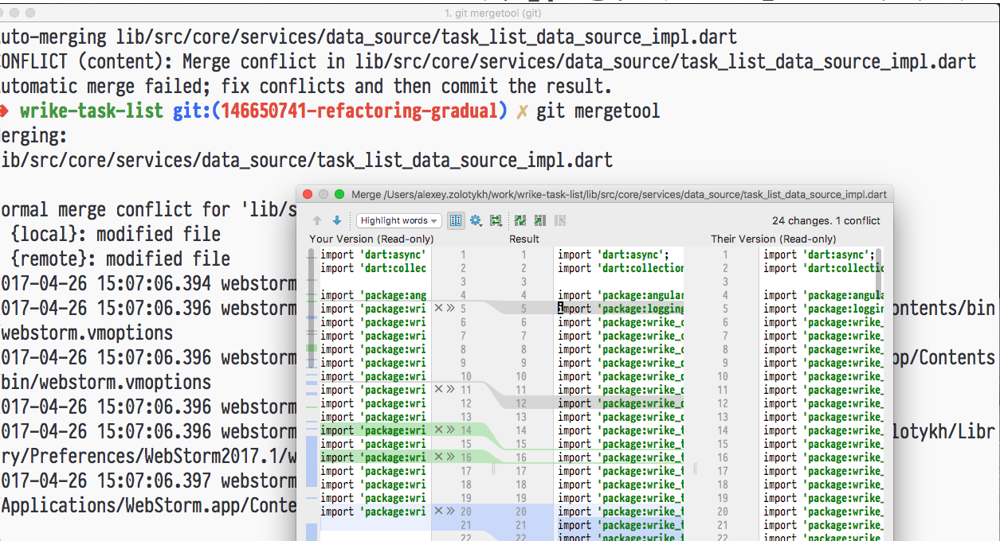Спасибо! Жду ваших вопросов!
не стесняйтесь делиться своими лайфхаками!
twitter: @zolotyh